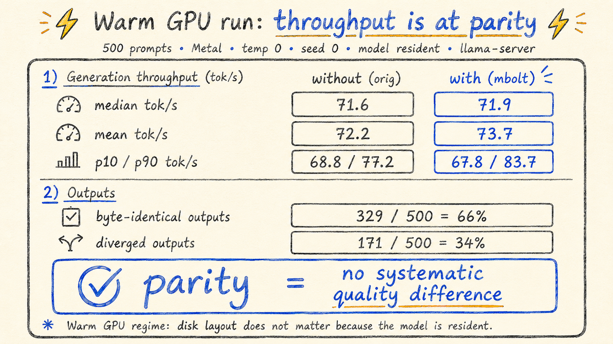
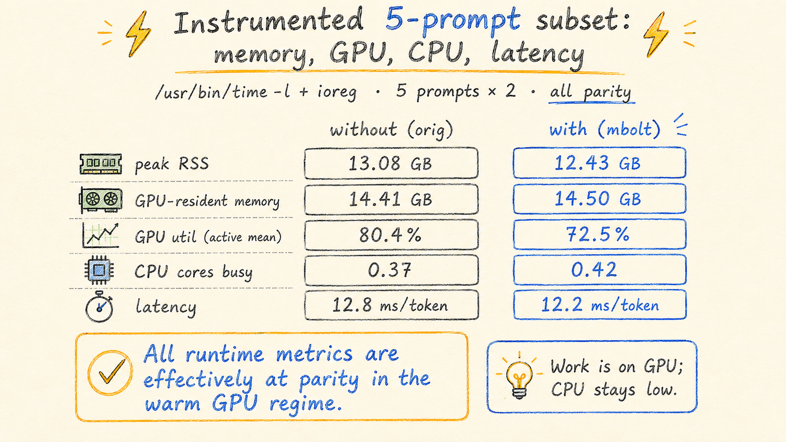
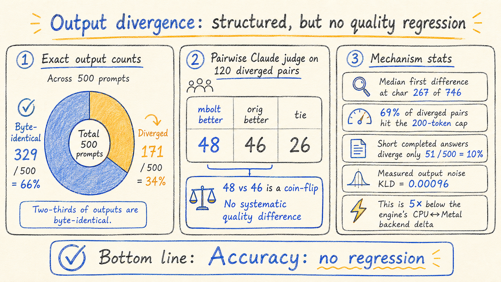
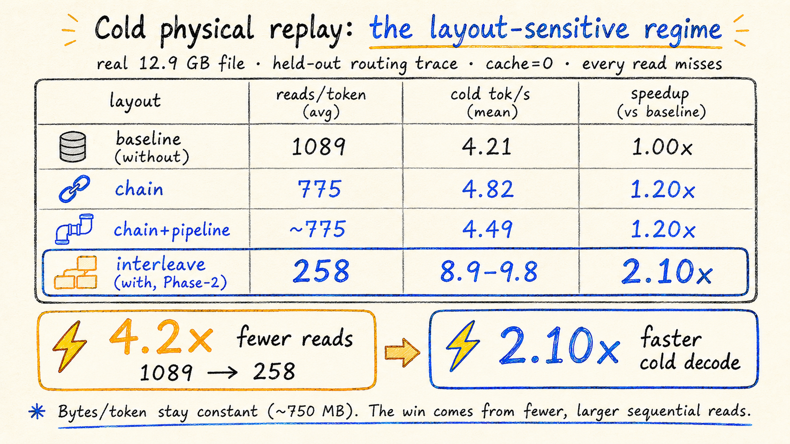
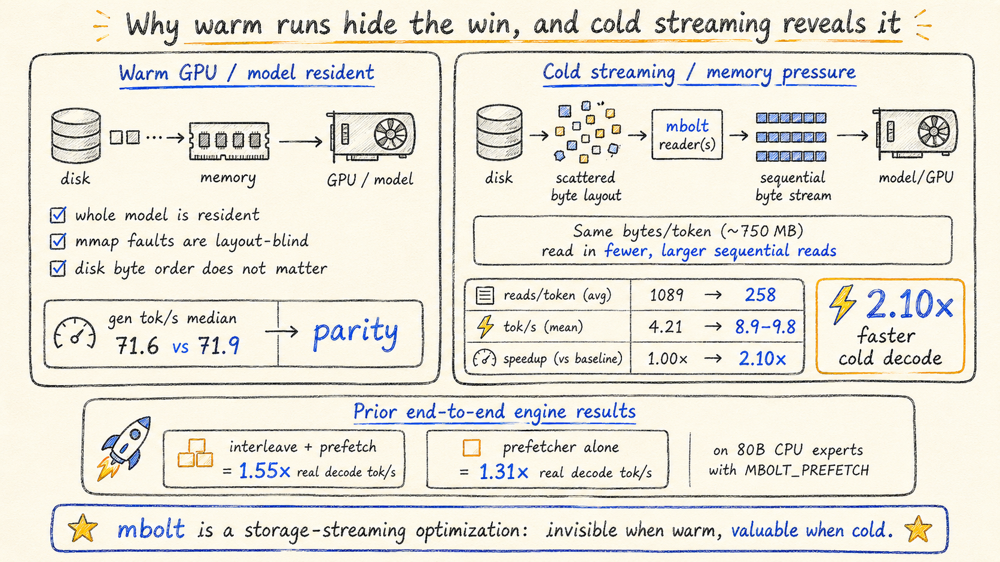
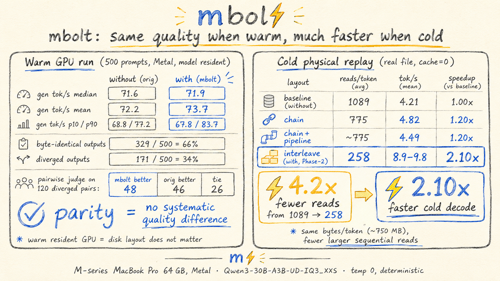

Profile-guided optimization · MoE inference · storage
mbolt reorders the expert weights inside a Mixture-of-Experts GGUF so the bytes a real workload reads together sit together on disk. Here is what 500 prompts say about it.
A Mixture-of-Experts model only touches a handful of its experts per token — but which ones depends on the input, and they are scattered across the file. On this 30B model the expert slices are 92% of the file bytes. When the model does not fit in memory and streams from disk, decoding one token means thousands of tiny scattered reads.
mbolt is BOLT/PGO for model binaries: trace which experts a real workload activates together, then rewrite the GGUF so those slices are physically adjacent. A streaming engine then reads a few big sequential chunks instead of thousands of random page faults. Weights stay bit-exact (+0.003% size); only the byte order changes.
500 prompts (Dolly + CodeAlpaca), run through both the stock file (without) and the
mbolt-reordered file (with), via llama-server so each model loads once.
Deterministic: temp 0, seed 0, thinking disabled, 200-token cap.
Six things measured: latency, throughput, memory, GPU, CPU, and accuracy.
With the whole 12.9 GB model resident on the GPU, disk byte-order is irrelevant — mmap faults are layout-blind. Across 500 prompts the two files are indistinguishable:

A smaller instrumented pass (/usr/bin/time -l for RSS and CPU, ioreg
for GPU utilization — no sudo needed) confirms nothing moves in the warm regime:

Reordering experts permutes the softmax reduction order by ~1 ulp, and over 48 layers that can flip a token. So 34% of outputs eventually diverge — but that number is the headline, not the story. A pairwise Claude judge on 120 diverged pairs splits 48 mbolt / 46 orig / 26 tie: a coin-flip.

Now the point. Replay the exact per-token byte-range reads a streaming engine would issue —
cache flushed, every read a miss (hit 0.00) — against the real file, on
held-out trace tokens (clustered on the first 80%, replayed on the last 20%).
Here byte order is everything:

chain layout — which loads in stock llama.cpp today — already gets 1.20×.
Same model, two regimes. When resident, the GPU never touches the disk order. When streaming
under memory pressure, the disk order is the bottleneck — and prior end-to-end engine
runs (80B, CPU experts, with the MBOLT_PREFETCH reader) turn the I/O floor into
real speed: 1.55× decode with interleave+prefetch, 1.31× from the prefetcher alone.

After this went up, the author of an MLX expert-offload streamer — an LRU-caching, explicit-read engine, the exact consumer §7 asks for — measured these levers on his own engine in mlx-lm#1438, adversarially and in public. Three results:
On a fine-grained model it holds. Qwen3.6-35B-A3B-8bit (~1 MB expert slices): coalescing each expert's nine scattered sub-slices into one contiguous block — profile-free, no clustering — measured 2.34× per-cold-expert I/O, which is +17.6% decode at 0.3 resident and +14.3% at his production sizing. The profile-guided reorder added only ~12% of read-ops on top: against an LRU, the deterministic coalesce carries the win.
On a big-expert model it doesn't, and I said so in advance. I pre-registered a bar: under +15% on the bigger-model test means "nice, not necessary." gpt-oss-120b (~4 MB slices) came back at 1.29× I/O = +9.7% — misses there are bandwidth-bound, and there is no per-read latency left for the layout to reclaim.
The same thread killed two ideas properly (cross-layer prefetch: three independent nulls; pinned resident sets: plain LRU wins even in-session) and produced the safetensors/MLX pipeline + bit-exact coalesce rewriter, public here: gist.
